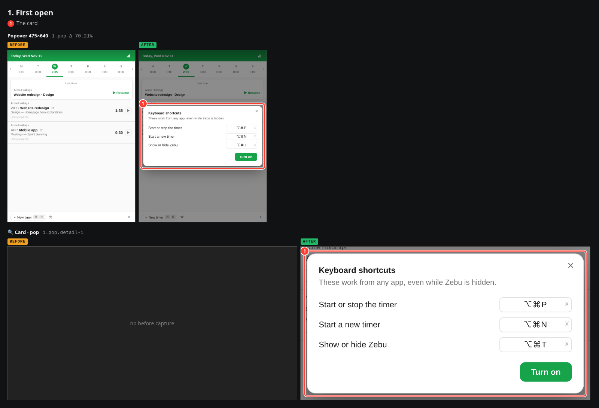
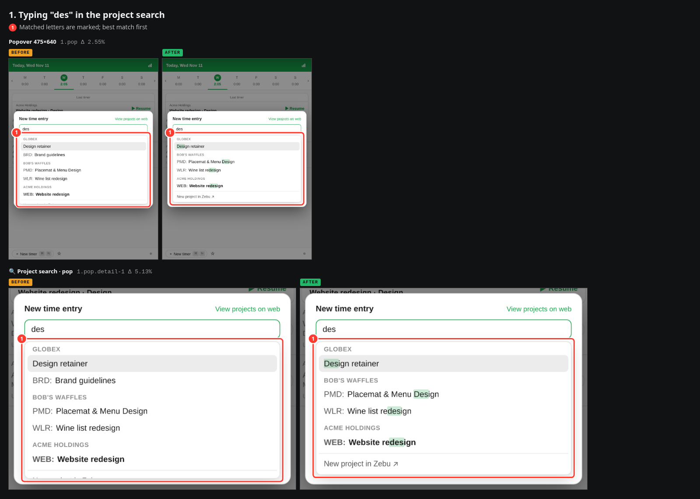

The three timer hotkeys were bound silently on a Mac, with keys of my own choosing. They now follow Harvest (⌥⌘N new timer, ⌥⌘T show/hide; Harvest has no start/stop key, so that one is ⌥⌘P) and are offered once on a single card the first time the popover opens: three rows, each one click to change, one button to turn them on.

Global hotkeys already existed but every one shipped unbound behind Settings › Keyboard shortcuts, so nobody had a shortcut until they found that tab; on a Mac, start/stop, new timer and show/hide now come bound. In the project and task search, Tab left the field with its old value (typing "des", Tab, ⌘↵ started the timer on the previous project); Tab now takes the highlighted match and moves to the next field, exactly as Return does. The matcher was also tightened so loose queries stop listing unrelated projects, and rows mark the characters that matched.